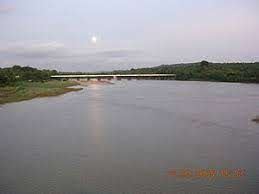

Bharathapuzha RiverThe River of Bharata, also known as Nila, the Bharathapuzha River is a west-flowing river in the state of Kerala, and is the second longest river in the state. The river has been an integral part of life in the southern regions of Malabar. The name Nila has been given to the river to show the importance of it being more than just a river, as there are several mentions of the river in the ancient Hindu scriptures. All along the river, there are about 11 dams made to use its waters for the purpose of irrigation. |
 |
Keralamkundu WaterfallsA basin at the base of waterfalls where people can enjoy a dip in the pond is something everyone wants to have an experience. Keralam Kundu Waterfalls are undoubtedly the best of all Malappuram Tourist Places, and that is why people keep flocking here to have an experience of the mystical. The water flows in from the forest of the western ghat and forms a pool of crystal clear water at the base of the falls. Also, it is believed that the water has many medicinal properties. |
 |